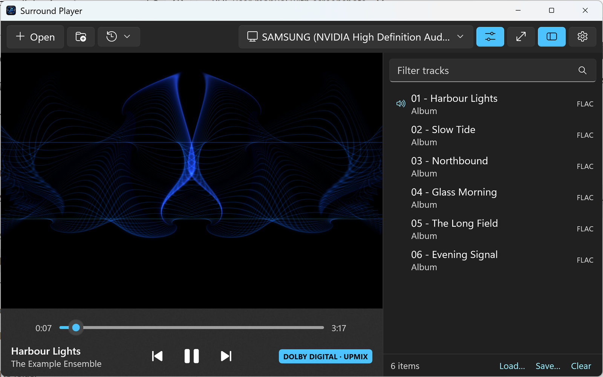
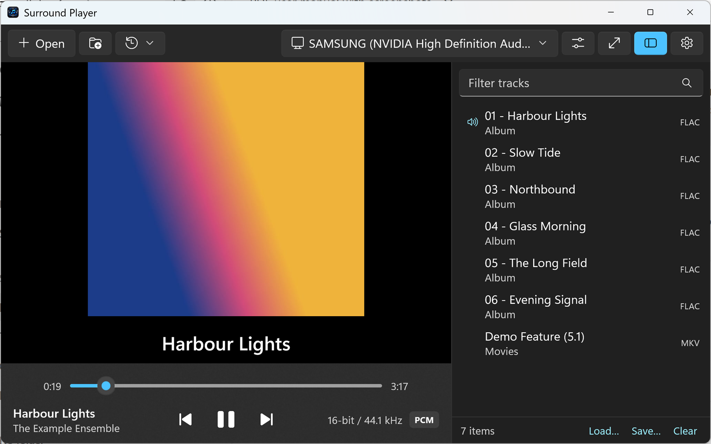
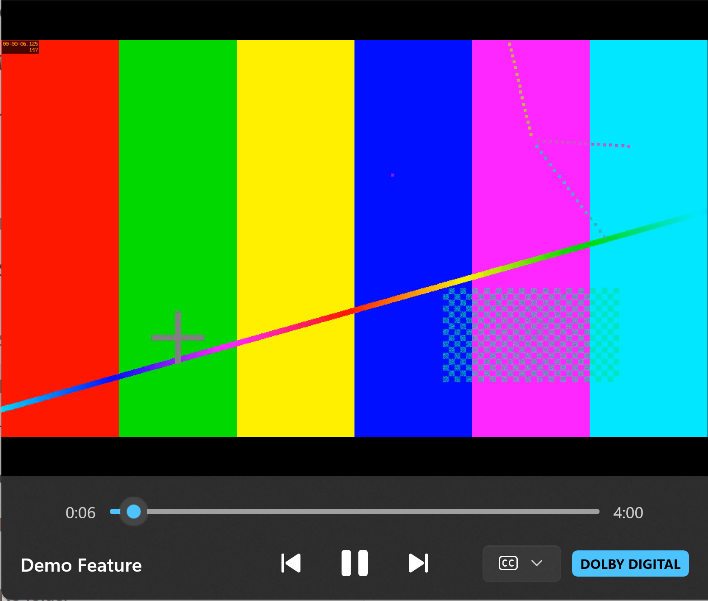
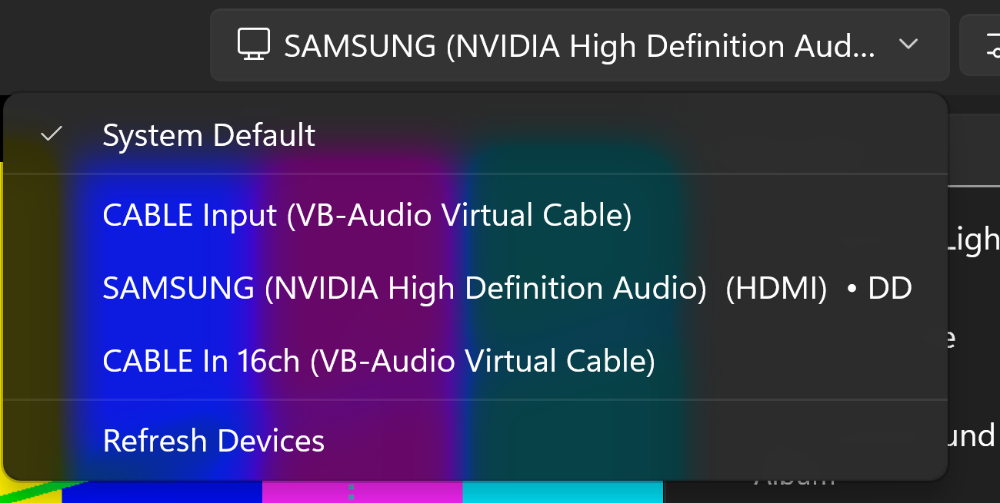
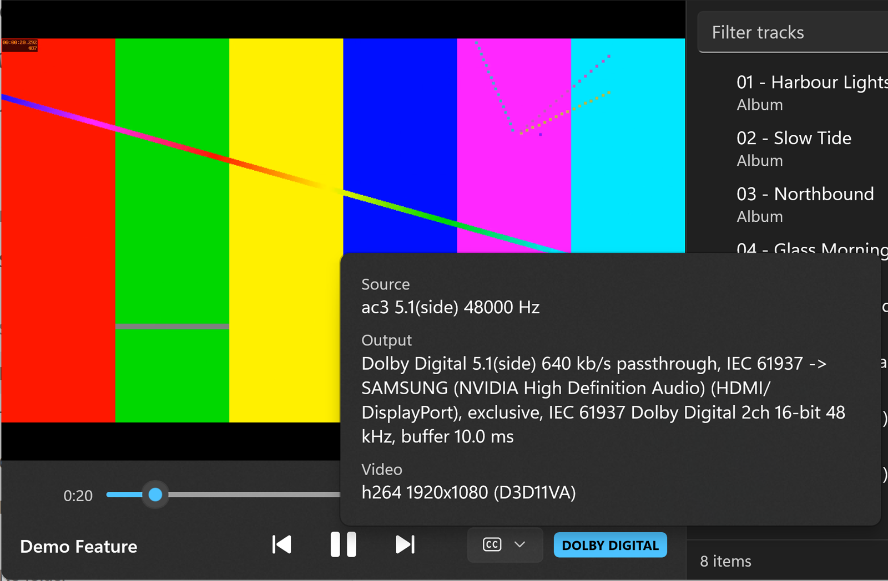
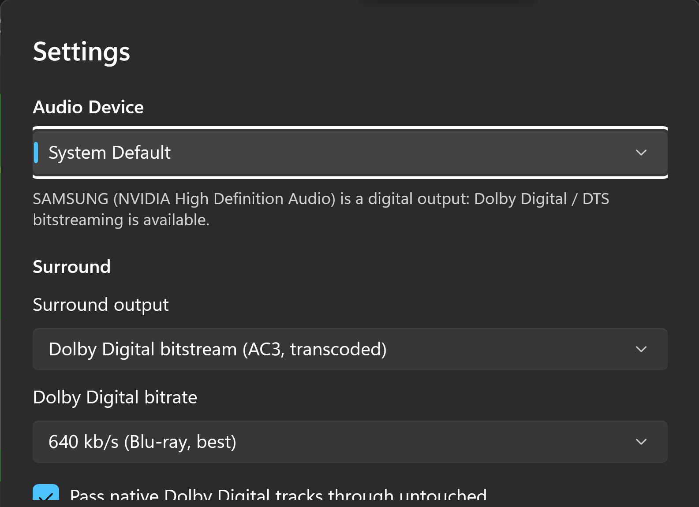
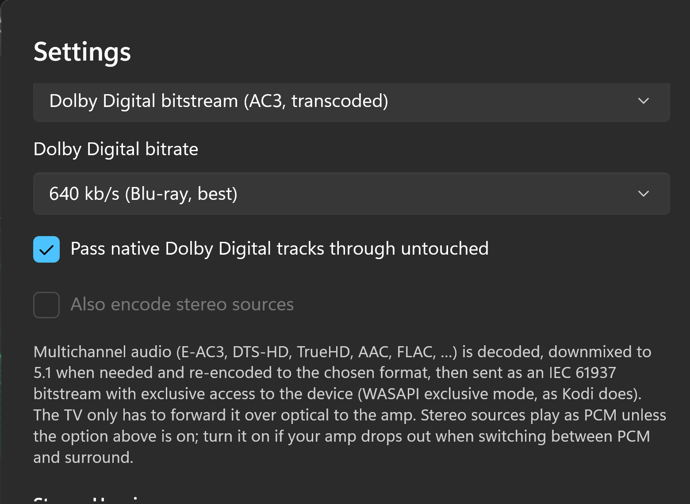
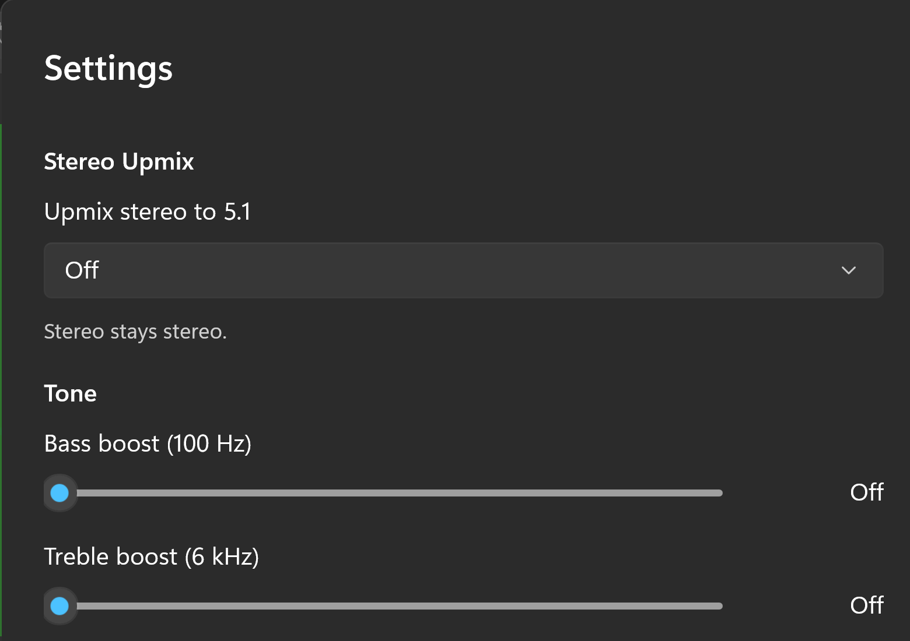
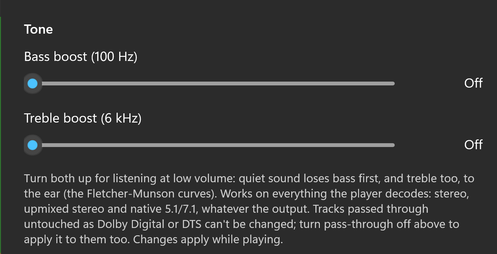
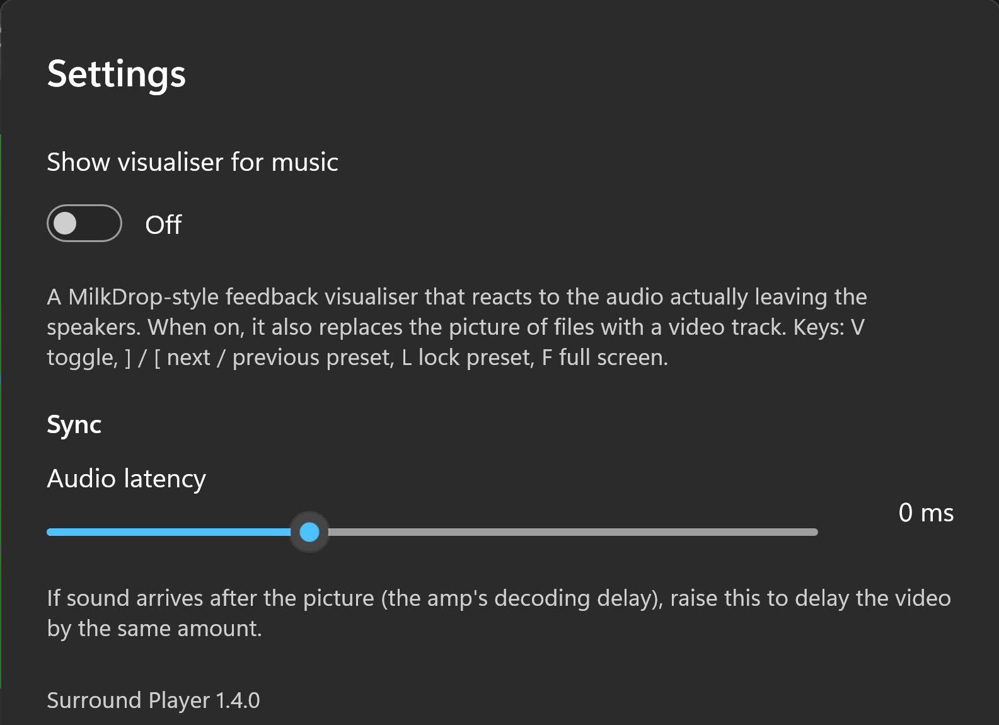

Surround Player plays your music and films and makes sure that surround sound actually reaches your surround speakers, even when the amplifier is connected to the TV by an optical cable.
Many living rooms are wired like this: the computer goes into the TV over HDMI, and the TV passes its sound to an amplifier over an optical (S/PDIF) cable. An optical cable can only carry two channels of uncompressed sound. Surround (5.1) can only get through it when it is compressed as Dolby Digital (AC3) or DTS. Most players send plain PCM, so the amp only ever receives stereo.
Surround Player converts whatever you play into a Dolby Digital or DTS bitstream and sends it to the TV untouched, the same way Kodi and Blu-ray players do. The TV forwards it to the amp, and the amp decodes it into full 5.1.
.srt, .ass and .vtt files.| Feature | Windows | macOS |
|---|---|---|
| Dolby Digital / DTS transcode and passthrough | ✓ | ✓ |
| Multichannel PCM, stereo upmix | ✓ | ✓ |
| Bass and treble boost | ✓ (1.4) | — (coming) |
| Audio track menu, cover art, folder art, cue sheets, Open Recent, visualiser | ✓ | ✓ |
Playlist remembered at launch; .m3u8 playlists; subtitles | ✓ | ✓ |
| Gapless playback between separate album files | ✓ | — (cue sheet tracks are gapless) |
Ready-made downloads are on the project's Releases page:
github.com/smithtopher/SurroundPlayer/releases. Nothing else needs to be installed.
SurroundPlayer-<version>-windows-x64.exe from the latest release (about 70 MB).
It is a single self-contained program: .NET, the Windows App SDK and the audio engine are all inside it.Programs folder or on the desktop, and double-click it.%TEMP%\.net. Later starts take about a second..exe. You can also drag files onto the program's icon.Settings, the saved playlist and the recent-files list are kept in %LOCALAPPDATA%\SurroundPlayer.
To update, replace the .exe with the new version; your settings are kept.
…-apple-silicon.zip (M1 and later),
…-intel.zip, or …-universal.zip (runs on both).xattr -dr com.apple.quarantine "/Applications/Surround Player.app"Settings are stored in the local.surroundplayer preferences, and the playlist in
~/Library/Application Support/SurroundPlayer.
The window has three parts: the toolbar at the top, the stage on the left (artwork, video or the visualiser, with the transport controls beneath it), and the playlist on the right.

1 2 3 4 5 6 7 8 9 10 11 12 13 14 15 16 17On macOS the same commands are also in the File and Playback menus.
New items are added to the end of the playlist. Double-click any item to play it. When a track ends, the next one starts.
Type in Filter tracks to show only matching items. The filter looks at file and folder names, and every
word must match: pink wall finds Pink Floyd's The Wall. Press Enter to play
the first match and Esc to clear the filter. While the filter box has focus, single-key shortcuts are
turned off so you can type freely.
.m3u8 file with relative paths, so it
still works if you move the whole music folder..m3u/.m3u8 file
and starts the first entry. Opening a playlist file with Open adds its entries instead.Some albums are ripped as one big file with a .cue sheet that marks where each track starts.
Add the .cue file (or its folder) and the playlist shows the individual tracks instead of the one
big file. Tracks of the same file always play without a gap.
On Windows, separate album files also play gaplessly when they have the same format, so live albums and DJ mixes run on without a click or pause between tracks.
When the visualiser is off and the file has no video, the stage shows the album cover. The player uses art
embedded in the file first. If there isn't any, it looks for a picture in the same folder: one named like the
file, then cover, folder, front, album or albumart
(.jpg, .jpeg or .png), then any picture whose name contains one of those words.
Almost any audio or video format plays: FLAC, ALAC, WAV, AIFF, MP3, AAC/M4A, Ogg Vorbis, Opus, WMA, AC3, DTS, E-AC3, TrueHD and more; video in MKV, MP4, MOV, AVI, TS and others with H.264, HEVC, MPEG-2, MPEG-4, VP9 or AV1.
Video files play in the stage, decoded by your graphics card where possible. The picture is timed against the sound coming out of the device, so lips stay in sync.

Press F or double-click the picture. The toolbar and playlist are hidden and the controls float over the picture; they and the mouse pointer fade out after 3 seconds without mouse movement. Move the mouse to bring them back, and press Esc or F to leave full screen.
When a file has more than one audio track (for example several languages, or a commentary), a track menu appears in the controls bar. Press A to step through the tracks.
Movie.srt, Movie.en.srt, Movie.de.forced.ass, and so on. Files in other text
encodings (such as Windows-1252) are converted for you.An amplifier needs a moment to decode Dolby Digital, so the sound can arrive slightly after the picture. If voices lag, raise Settings → Sync → Audio latency (see chapter 7) until they match.
Click the device button in the toolbar and pick where the sound should go. Devices that can take a Dolby Digital bitstream are marked • DD. System Default follows the device chosen in Windows' (or macOS') sound settings. Refresh Devices re-reads the list, for example after switching the TV on.

The player takes exclusive control of the device while it plays a bitstream, so the sound isn't changed on the way out. Other programs can't play through that device at the same time. If the TV is switched off or changes input, the player notices and reconnects when the device comes back.
The badge at the right of the controls shows what is leaving the computer right now:
| Badge | Meaning |
|---|---|
| PCM | Normal uncompressed sound. Stereo sources play this way unless you turn on upmix or "Also encode stereo sources". |
| DOLBY DIGITAL | A Dolby Digital (AC3) bitstream, either passed through from the file or encoded by the player. |
| DTS | A DTS bitstream. |
| … · UPMIX | Stereo is being upmixed to 5.1 (chapter 7). |
Click the badge for the full story: the source format, exactly what is sent to which device, and how the video is decoded.

Open Settings with the gear button or Ctrl+, (⌘+, on a Mac). Changes take effect straight away, even while something is playing. Click Done to close the dialog.


The same choice as the toolbar menu, with each device's channel count. The line below tells you whether the device is a digital output that can take Dolby Digital or DTS.
| Choice | What happens | Use it when |
|---|---|---|
| Dolby Digital bitstream (default) | Surround sound is encoded as Dolby Digital (AC3) and sent as a bitstream. Files that already have Dolby Digital pass through untouched. | Your amp is on optical or ARC. Works with almost every amp. |
| DTS bitstream | Surround is encoded as DTS. Dolby Digital and DTS tracks pass through (for DTS-HD, the DTS core). | Your amp and TV handle DTS and you prefer it. |
| Multichannel PCM | Nothing is converted: 5.1 and 7.1 sources go out as uncompressed PCM in their own layout and sample rate. | An AV receiver is connected directly by HDMI. |
| Off (stereo PCM) | Everything plays as ordinary stereo. | Headphones, computer speakers. |
Most music and TV is stereo. Upmix spreads it over all your speakers: dialogue and vocals can move to the centre speaker, room sound and reverb go to the rear speakers, and the bass is fed to the subwoofer. It works whenever the surround output is Dolby Digital, DTS or Multichannel PCM. Turn it on and off with U (or the mode menu in Settings); the badge then reads DOLBY DIGITAL · UPMIX.

| Mode | Sound |
|---|---|
| Off | Stereo stays stereo. |
| Music | Gentle room sound in the rears; vocals stay between the front speakers. |
| Movies & TV | Dialogue locked to the centre speaker, ambience behind you. |
| Wide | Bigger, more enveloping sound with stronger rears and a wider front. |
| Custom | Your own settings. Moving any slider switches to Custom, and your Custom settings are kept when you try a preset. |
With a mode chosen, these controls appear:

Bass boost (100 Hz) and Treble boost (6 kHz) each go up to +12 dB. Turn both up when listening quietly: at low volume the ear loses bass first, and treble too. A limiter stops the boost from distorting. The boost works on everything the player decodes: stereo, upmixed stereo and native 5.1/7.1. It can't change tracks that pass through untouched as Dolby Digital or DTS, unless you turn passthrough off.

The visualiser draws flowing, beat-reactive graphics in the style of the classic MilkDrop visualiser. It listens to the sound actually leaving the speakers, so it stays in time even while a Dolby Digital bitstream is playing.
.milk preset files.Single keys work in the player window but not while you are typing in the filter box.
| Windows | macOS | Action |
|---|---|---|
| Space | Space | Play / pause |
| ← → | ← → | Back / forward 10 seconds |
| ↓ ↑ | ↓ ↑ | Back / forward 1 minute |
| Ctrl+← Ctrl+→ | ⌘← ⌘→ | Previous / next track |
| Ctrl+O | ⌘O | Open files |
| Ctrl+Shift+O | File ▸ Open… | Add folders |
| Ctrl+R | File ▸ Open Recent | Recently opened files, folders and cue sheets |
| Ctrl+S | ⌘S | Save the playlist as .m3u8 |
| Ctrl+L | ⌘L | Load a playlist (replaces the current one) |
| Ctrl+F | ⌘F | Search the playlist |
| Enter / Esc | Return / Esc | In the filter box: play the first match / clear |
| Ctrl+, | ⌘, | Settings |
| F or double-click | F or double-click | Full screen on/off (Esc leaves) |
| V | V | Visualiser on/off |
| ] [ or N P | ] [ | Next / previous visualiser preset |
| L | L | Lock / unlock the current preset |
| U | U | Stereo upmix on/off |
| A | A | Next audio track |
| S | S | Subtitles: off → each track → off |
This happens when a bitstream reaches something that doesn't decode it, usually a TV set to PCM that forwards the raw data. Set the TV to Pass-through, or choose Off (stereo PCM) in Settings. The player itself never sends a bitstream to analogue speakers or headphones.
Many amps need a moment to switch between PCM and Dolby Digital. Turn on Also encode stereo sources (or upmix), so everything is sent as Dolby Digital and the amp never has to switch.
Raise Audio latency in Settings until they match, typically 50–150 ms when an amp decodes Dolby Digital.
The player notices when the device goes away and reopens it when it comes back, at the same position. If it doesn't, choose Refresh Devices in the output menu.
That is SmartScreen, because the program isn't code-signed. Choose More info → Run anyway; it asks once per version.
The file couldn't be read for several seconds, for example from a sleeping USB drive or a network share. The player tries again on its own (up to three times per track) and stops with this message if the file stays unreadable.
README.md explains the audio
path in technical detail. Problems and ideas can be reported on the GitHub page:
github.com/smithtopher/SurroundPlayer.